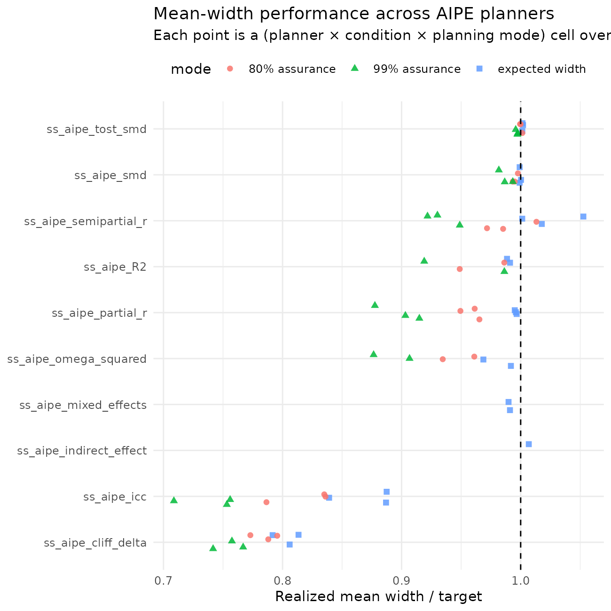
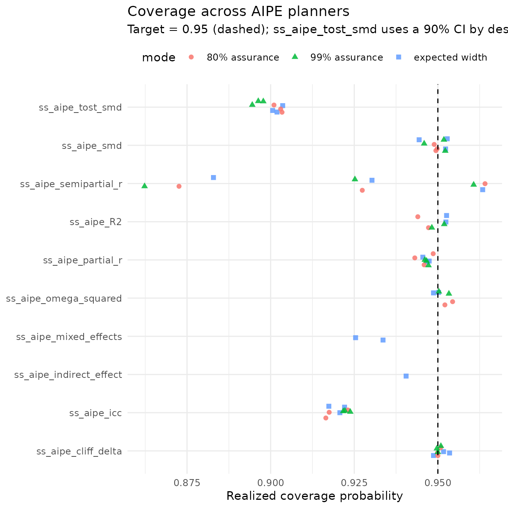
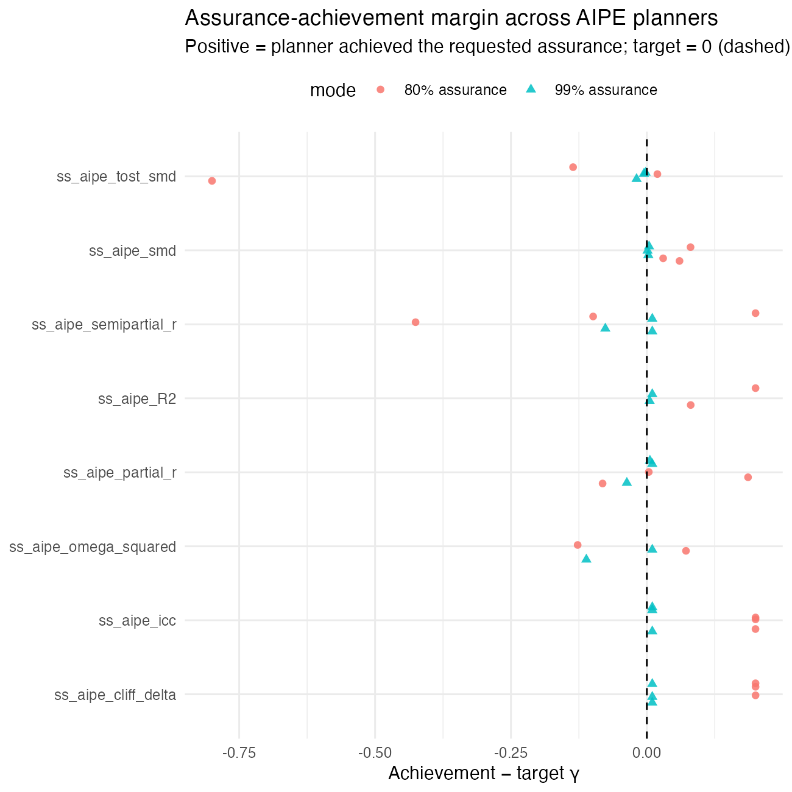
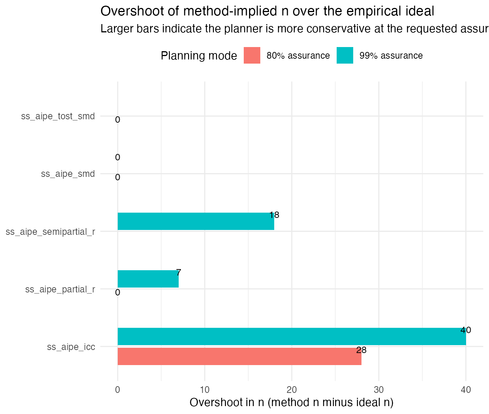
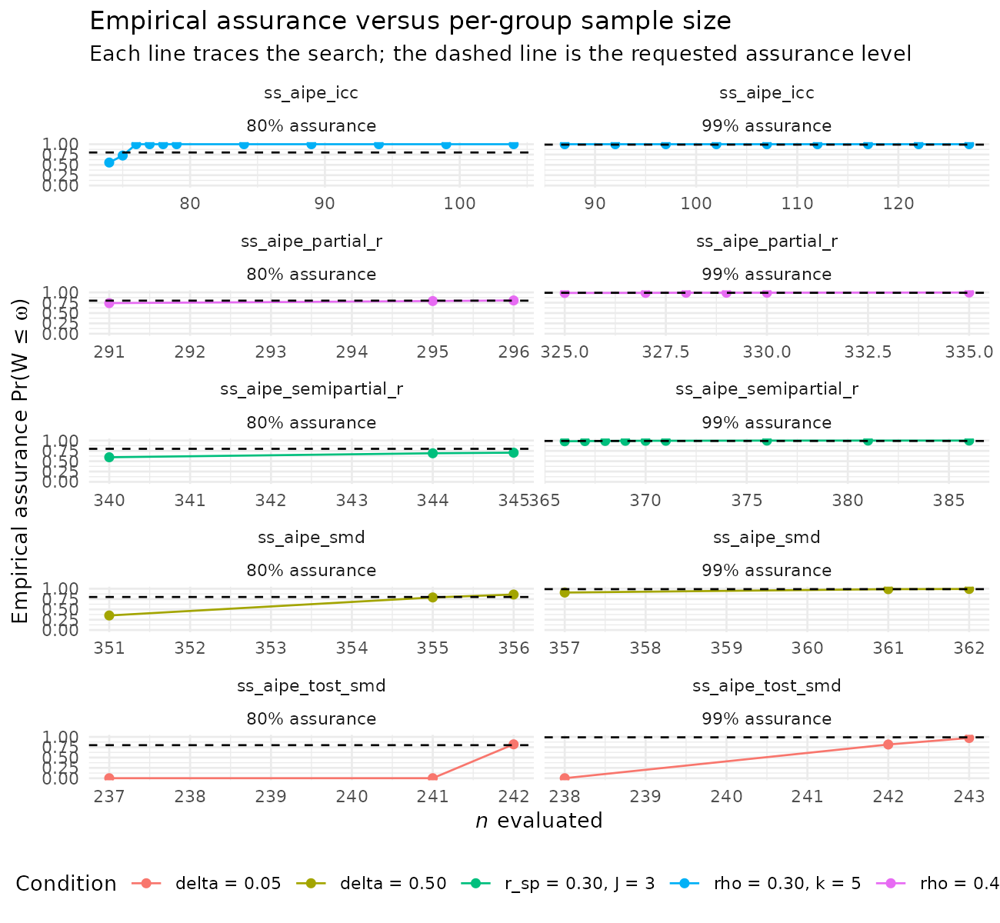

Performance of Accuracy in Parameter Estimation Sample Size Planning: A 10,000-Replication Monte Carlo Study
Ken Kelley · University of Notre Dame
August 01, 2026
Source:vignettes/aipe_simulation_study.Rmd
aipe_simulation_study.RmdAbstract
Accuracy in parameter estimation (AIPE) is the design framework in
which the goal of a study is a sufficiently narrow confidence
interval (CI) on a target parameter, rather than (or in addition to)
rejecting a null hypothesis. DMAR implements an ss_aipe_*
family of sample size planners that invert the asymptotic variance of
each estimator and return the smallest
(or number of clusters, etc.) for which the expected width of a CI is no
greater than a user-specified target
,
with an optional assurance level
that controls the probability that the realized width of the CI is no
greater than
(Kelley, Maxwell, & Rausch, 2003). This vignette reports a
10,000-replication Monte Carlo simulation study that evaluates each
planner under the assumptions on which it is built, i.e., when the
target parameter equals the value specified to the planner and the
distributional assumptions of the estimator hold exactly. For every
function, every condition, and every assurance setting, we report (i)
the recommended sample size, (ii) the mean and the
5th/25th/50th/75th/95th percentiles of the realized CI width across
10,000 simulated datasets, (iii) the realized coverage probability of
the CI, and (iv) the assurance-achievement rate, that is, the
proportion of replications in which the realized width was at or below
the target. The results demonstrate that, when assumptions hold and the
planner’s candidate value is correct, the family achieves expected
widths very close to the target, coverage at or very near the nominal
95% level, and assurance-achievement rates that approach the requested
assurance probability.
Why This Matters
Suppose a researcher aims to plan sample size with goals related to accuracy in parameter estimation and uses the DMAR functions contained here. The researcher should have a sense of how well the methods work when they should work, that is, when the population values are correctly specified and the model’s assumptions are met (e.g., normality within groups, homogeneous variances, independent observations). This is important from two perspectives, not only from the expected-width perspective, but also when assurance is incorporated into the planning, such that one has a particular probability that the realized confidence interval will be sufficiently narrow. The simulation in this vignette evaluates that performance across every AIPE planner shipped in the package, and the follow-up investigation later in the document examines how much, if at all, the methods overshoot the sample size needed to achieve a stated assurance probability.
Design
library(DMAR)
# Two-step load path: prefer the installed package, fall back to the
# package source tree during local development.
data_path <- system.file("extdata", "aipe_simulation_study", "results.rda",
package = "DMAR")
if (!nzchar(data_path) || !file.exists(data_path)) {
alt <- file.path("..", "inst", "extdata", "aipe_simulation_study",
"results.rda")
if (file.exists(alt)) data_path <- alt
else if (file.exists("inst/extdata/aipe_simulation_study/results.rda"))
data_path <- "inst/extdata/aipe_simulation_study/results.rda"
}
if (nzchar(data_path) && file.exists(data_path)) load(data_path)
results_loaded <- exists("aipe_sim_results")
if (!results_loaded) {
message("AIPE simulation results not yet computed; tables will be empty. ",
"Run inst/extdata/aipe_simulation_study/run_simulations.R first.")
}Generic Protocol
The simulation follows the same five steps for every planner:
Specify a candidate population value for the target parameter (e.g., for the standardized mean difference).
Specify a target CI width and an optional assurance level . We use 95% CIs throughout (i.e., a Type I error rate of ).
-
Ask the planner for the recommended sample size. Three planning modes are considered:
- Expected-width: . The planner returns the smallest such that , where is the realized CI width.
- 80% assurance: . The planner returns the smallest such that .
- 99% assurance: . The planner returns the smallest such that .
Generate datasets from the assumed data generating model at the recommended . Data generating models are documented for each planner below.
-
Fit the corresponding analysis model to each replicate, compute the CI, and aggregate:
- Mean and standard deviation of
- 5th, 25th, 50th, 75th, 95th percentiles of
- Coverage probability , which should be at or very near
- Assurance-achievement rate , which should be at or very near (or, when planning under expected width, by definition)
The seed is set to a unique offset of
per condition; the package convention set.seed(113) is used
so that runs are reproducible.
Conditions per Planner
For each planner, we span evenly-spaced candidate population values
along the parameter’s natural scale, paired with one or two target
widths, and crossed with the three planning modes (NULL,
0.80, 0.99). The exact grid for each planner
is shown alongside its results in the next sections.
Outcome of Interest: Does the Recommended n Deliver?
A planner is well-behaved under its assumptions when:
- The mean realized width is close to (and slightly below) the target . A mean above suggests the asymptotic approximation is too optimistic at the chosen ; a mean far below suggests it is conservative.
- The realized coverage sits at the nominal 0.95. Substantially above 0.95 indicates a conservative interval; below 0.95 indicates a liberal one.
- The assurance-achievement rate matches or exceeds when was supplied. The 0.80 column should achieve 0.80 and the 0.99 column should achieve 0.99; either column being noticeably above the target is acceptable but suggests conservativeness in the planner.
How to Re-run
The full simulation code is in
inst/extdata/aipe_simulation_study/run_simulations.R. To
re-run from a fresh R session:
# From the package directory:
source("inst/extdata/aipe_simulation_study/run_simulations.R")
# About 1-2 hours on a 2024 MacBook Pro; produces results.rda in the
# same directory.The vignette below loads the resulting aipe_sim_results
data frame and renders the tables and plots.
Results
format_assurance <- function(x) {
ifelse(is.na(x), "expected width",
ifelse(x == 0.80, "80% assurance", "99% assurance"))
}
aipe_sim_results$mode <- format_assurance(aipe_sim_results$assurance_target)
fmt <- function(x, d = 3) formatC(x, digits = d, format = "f")
fmt_int <- function(x) formatC(round(x), format = "d", big.mark = ",")
make_table <- function(fn) {
sub <- aipe_sim_results[aipe_sim_results$function_name == fn, ]
data.frame(
Parameter = sub$parameter,
`Target ω` = fmt(sub$width_target, 2),
Plan = sub$mode,
`n (per group / total)` = fmt_int(sub$n_per_group),
`Mean W` = fmt(sub$mean_width, 3),
`SD(W)` = fmt(sub$sd_width, 3),
`5%` = fmt(sub$p05_width, 3),
`25%` = fmt(sub$p25_width, 3),
`50%` = fmt(sub$median_width, 3),
`75%` = fmt(sub$p75_width, 3),
`95%` = fmt(sub$p95_width, 3),
Coverage = fmt(sub$coverage, 3),
`Pr(W ≤ ω)` = fmt(sub$achievement, 3),
check.names = FALSE,
stringsAsFactors = FALSE
)
}Standardized Mean Difference: ss_aipe_smd()
Population model. Two independent samples, each of
size
,
from
and
.
The sample standardized mean difference is
,
where
is the pooled standard deviation, and the CI is the noncentral
t CI from ci_smd().
Conditions. (evenly spaced at ) at across the three planning modes.
knitr::kable(make_table("ss_aipe_smd"),
caption = "ss_aipe_smd: realized CI behavior over 10,000 replications.")| Parameter | Target ω | Plan | n (per group / total) | Mean W | SD(W) | 5% | 25% | 50% | 75% | 95% | Coverage | Pr(W ≤ ω) |
|---|---|---|---|---|---|---|---|---|---|---|---|---|
| delta = 0.20 | 0.30 | expected width | 344 | 0.300 | 0.001 | 0.299 | 0.299 | 0.300 | 0.300 | 0.301 | 0.944 | 0.718 |
| delta = 0.50 | 0.30 | expected width | 353 | 0.300 | 0.001 | 0.298 | 0.299 | 0.300 | 0.301 | 0.302 | 0.952 | 0.597 |
| delta = 0.80 | 0.30 | expected width | 369 | 0.300 | 0.002 | 0.297 | 0.299 | 0.300 | 0.301 | 0.304 | 0.953 | 0.501 |
| delta = 0.20 | 0.30 | 80% assurance | 345 | 0.299 | 0.001 | 0.299 | 0.299 | 0.299 | 0.300 | 0.300 | 0.949 | 0.880 |
| delta = 0.50 | 0.30 | 80% assurance | 356 | 0.298 | 0.001 | 0.296 | 0.297 | 0.298 | 0.299 | 0.301 | 0.950 | 0.860 |
| delta = 0.80 | 0.30 | 80% assurance | 374 | 0.298 | 0.002 | 0.295 | 0.297 | 0.298 | 0.299 | 0.302 | 0.949 | 0.830 |
| delta = 0.20 | 0.30 | 99% assurance | 348 | 0.298 | 0.001 | 0.297 | 0.298 | 0.298 | 0.298 | 0.299 | 0.946 | 0.993 |
| delta = 0.50 | 0.30 | 99% assurance | 362 | 0.296 | 0.001 | 0.294 | 0.295 | 0.296 | 0.297 | 0.298 | 0.952 | 0.994 |
| delta = 0.80 | 0.30 | 99% assurance | 383 | 0.294 | 0.002 | 0.291 | 0.293 | 0.294 | 0.296 | 0.298 | 0.952 | 0.991 |
Squared Multiple Correlation: ss_aipe_R2()
Population model. Multivariate-normal predictors
with population correlation matrix
;
the outcome
is generated as
with equal standardized
s
and
,
so the population squared multiple correlation is
.
The CI is the random- predictors CI from ci_R2() (Lee,
1971; Algina & Olejnik, 2000; Kelley, 2008).
Conditions.
at
predictors,
,
and the three planning modes. The
cell was dropped because the optimizer inside ss_aipe_R2()
hits a boundary condition at very small
and 99% assurance.
knitr::kable(make_table("ss_aipe_R2"),
caption = "ss_aipe_R2: realized CI behavior over 10,000 replications.")| Parameter | Target ω | Plan | n (per group / total) | Mean W | SD(W) | 5% | 25% | 50% | 75% | 95% | Coverage | Pr(W ≤ ω) |
|---|---|---|---|---|---|---|---|---|---|---|---|---|
| rho2 = 0.30, p = 5 | 0.20 | expected width | 230 | 0.198 | 0.004 | 0.190 | 0.197 | 0.199 | 0.200 | 0.200 | 0.952 | 0.713 |
| rho2 = 0.50, p = 5 | 0.20 | expected width | 197 | 0.198 | 0.010 | 0.180 | 0.192 | 0.199 | 0.206 | 0.212 | 0.953 | 0.530 |
| rho2 = 0.30, p = 5 | 0.20 | 80% assurance | 231 | 0.197 | 0.004 | 0.190 | 0.196 | 0.199 | 0.200 | 0.200 | 0.944 | 1.000 |
| rho2 = 0.50, p = 5 | 0.20 | 80% assurance | 215 | 0.190 | 0.009 | 0.173 | 0.184 | 0.191 | 0.196 | 0.203 | 0.947 | 0.881 |
| rho2 = 0.30, p = 5 | 0.20 | 99% assurance | 231 | 0.197 | 0.004 | 0.190 | 0.196 | 0.199 | 0.200 | 0.200 | 0.952 | 1.000 |
| rho2 = 0.50, p = 5 | 0.20 | 99% assurance | 229 | 0.184 | 0.008 | 0.169 | 0.178 | 0.185 | 0.190 | 0.196 | 0.948 | 0.995 |
Partial Correlation: ss_aipe_partial_r()
Population model. covariates are independent . and where the bivariate residual is with . The population partial correlation equals . The CI is the raw-scale Olkin-Finn (1995) asymptotic CI.
Conditions. (evenly spaced at ) at controls, , and the three planning modes.
knitr::kable(make_table("ss_aipe_partial_r"),
caption = "ss_aipe_partial_r: realized CI behavior over 10,000 replications.")| Parameter | Target ω | Plan | n (per group / total) | Mean W | SD(W) | 5% | 25% | 50% | 75% | 95% | Coverage | Pr(W ≤ ω) |
|---|---|---|---|---|---|---|---|---|---|---|---|---|
| rho = 0.20, J = 3 | 0.20 | expected width | 359 | 0.199 | 0.004 | 0.191 | 0.197 | 0.200 | 0.202 | 0.205 | 0.947 | 0.522 |
| rho = 0.40, J = 3 | 0.20 | expected width | 276 | 0.199 | 0.010 | 0.182 | 0.193 | 0.200 | 0.206 | 0.214 | 0.946 | 0.520 |
| rho = 0.60, J = 3 | 0.20 | expected width | 162 | 0.199 | 0.019 | 0.169 | 0.187 | 0.199 | 0.212 | 0.230 | 0.947 | 0.518 |
| rho = 0.20, J = 3 | 0.20 | 80% assurance | 382 | 0.193 | 0.004 | 0.186 | 0.191 | 0.193 | 0.196 | 0.199 | 0.949 | 0.986 |
| rho = 0.40, J = 3 | 0.20 | 80% assurance | 296 | 0.192 | 0.009 | 0.177 | 0.186 | 0.193 | 0.198 | 0.206 | 0.946 | 0.804 |
| rho = 0.60, J = 3 | 0.20 | 80% assurance | 178 | 0.190 | 0.017 | 0.162 | 0.178 | 0.190 | 0.202 | 0.218 | 0.943 | 0.719 |
| rho = 0.20, J = 3 | 0.20 | 99% assurance | 425 | 0.183 | 0.004 | 0.176 | 0.181 | 0.183 | 0.186 | 0.188 | 0.947 | 1.000 |
| rho = 0.40, J = 3 | 0.20 | 99% assurance | 335 | 0.181 | 0.008 | 0.167 | 0.175 | 0.181 | 0.186 | 0.193 | 0.947 | 0.996 |
| rho = 0.60, J = 3 | 0.20 | 99% assurance | 208 | 0.176 | 0.015 | 0.151 | 0.166 | 0.176 | 0.185 | 0.199 | 0.946 | 0.953 |
Semipartial Correlation: ss_aipe_semipartial_r()
Population model. covariates and as for the partial correlation. Then , so the population semipartial of on equals . The CI is the Olkin-Finn-style raw- scale asymptotic CI.
Conditions. (evenly spaced at ) at controls, , and the three planning modes.
knitr::kable(make_table("ss_aipe_semipartial_r"),
caption = "ss_aipe_semipartial_r: realized CI behavior over 10,000 replications.")| Parameter | Target ω | Plan | n (per group / total) | Mean W | SD(W) | 5% | 25% | 50% | 75% | 95% | Coverage | Pr(W ≤ ω) |
|---|---|---|---|---|---|---|---|---|---|---|---|---|
| r_sp = 0.15, J = 3 | 0.20 | expected width | 372 | 0.200 | 0.003 | 0.196 | 0.199 | 0.201 | 0.202 | 0.204 | 0.963 | 0.399 |
| r_sp = 0.30, J = 3 | 0.20 | expected width | 323 | 0.204 | 0.005 | 0.194 | 0.200 | 0.204 | 0.207 | 0.212 | 0.930 | 0.248 |
| r_sp = 0.45, J = 3 | 0.20 | expected width | 249 | 0.211 | 0.009 | 0.194 | 0.204 | 0.211 | 0.217 | 0.225 | 0.883 | 0.134 |
| r_sp = 0.15, J = 3 | 0.20 | 80% assurance | 395 | 0.194 | 0.002 | 0.190 | 0.193 | 0.195 | 0.196 | 0.198 | 0.964 | 1.000 |
| r_sp = 0.30, J = 3 | 0.20 | 80% assurance | 345 | 0.197 | 0.005 | 0.188 | 0.194 | 0.197 | 0.201 | 0.205 | 0.927 | 0.701 |
| r_sp = 0.45, J = 3 | 0.20 | 80% assurance | 268 | 0.203 | 0.009 | 0.187 | 0.197 | 0.203 | 0.209 | 0.217 | 0.873 | 0.374 |
| r_sp = 0.15, J = 3 | 0.20 | 99% assurance | 439 | 0.184 | 0.002 | 0.180 | 0.183 | 0.185 | 0.186 | 0.187 | 0.961 | 1.000 |
| r_sp = 0.30, J = 3 | 0.20 | 99% assurance | 386 | 0.186 | 0.005 | 0.178 | 0.183 | 0.186 | 0.189 | 0.193 | 0.925 | 1.000 |
| r_sp = 0.45, J = 3 | 0.20 | 99% assurance | 305 | 0.190 | 0.008 | 0.177 | 0.185 | 0.190 | 0.195 | 0.202 | 0.862 | 0.914 |
Intraclass Correlation: ss_aipe_icc()
Population model. Balanced one-way random-effects model with subjects each measured at occasions: , , . The CI is the Bonett (2002) Fisher-style -transformation CI back-transformed to the natural scale.
Conditions. (evenly spaced at ) at measurements per subject, , and the three planning modes.
knitr::kable(make_table("ss_aipe_icc"),
caption = "ss_aipe_icc: realized CI behavior over 10,000 replications.")| Parameter | Target ω | Plan | n (per group / total) | Mean W | SD(W) | 5% | 25% | 50% | 75% | 95% | Coverage | Pr(W ≤ ω) |
|---|---|---|---|---|---|---|---|---|---|---|---|---|
| rho = 0.10, k = 5 | 0.20 | expected width | 63 | 0.168 | 0.030 | 0.102 | 0.156 | 0.178 | 0.187 | 0.200 | 0.921 | 0.952 |
| rho = 0.30, k = 5 | 0.20 | expected width | 92 | 0.177 | 0.004 | 0.170 | 0.176 | 0.179 | 0.180 | 0.181 | 0.922 | 1.000 |
| rho = 0.50, k = 5 | 0.20 | expected width | 88 | 0.177 | 0.006 | 0.166 | 0.174 | 0.178 | 0.182 | 0.185 | 0.917 | 1.000 |
| rho = 0.10, k = 5 | 0.20 | 80% assurance | 73 | 0.157 | 0.025 | 0.100 | 0.150 | 0.165 | 0.173 | 0.184 | 0.916 | 1.000 |
| rho = 0.30, k = 5 | 0.20 | 80% assurance | 104 | 0.167 | 0.003 | 0.160 | 0.165 | 0.168 | 0.170 | 0.170 | 0.923 | 1.000 |
| rho = 0.50, k = 5 | 0.20 | 80% assurance | 99 | 0.167 | 0.005 | 0.157 | 0.164 | 0.168 | 0.171 | 0.174 | 0.917 | 1.000 |
| rho = 0.10, k = 5 | 0.20 | 99% assurance | 93 | 0.142 | 0.018 | 0.101 | 0.139 | 0.146 | 0.153 | 0.161 | 0.922 | 1.000 |
| rho = 0.30, k = 5 | 0.20 | 99% assurance | 127 | 0.151 | 0.003 | 0.146 | 0.150 | 0.152 | 0.153 | 0.154 | 0.924 | 1.000 |
| rho = 0.50, k = 5 | 0.20 | 99% assurance | 122 | 0.151 | 0.004 | 0.143 | 0.148 | 0.151 | 0.154 | 0.156 | 0.922 | 1.000 |
Omega Squared: ss_aipe_omega_squared()
Population model. One way balanced ANOVA with
cells. Population means are equally spaced on the unit-variance scale so
that the population omega squared equals the specified value. The CI is
the noncentral F CI from ci_omega_squared()
(Steiger, 2004).
Conditions. at cells, target width , and the three planning modes.
knitr::kable(make_table("ss_aipe_omega_squared"),
caption = "ss_aipe_omega_squared: realized CI behavior over 10,000 replications.")| Parameter | Target ω | Plan | n (per group / total) | Mean W | SD(W) | 5% | 25% | 50% | 75% | 95% | Coverage | Pr(W ≤ ω) |
|---|---|---|---|---|---|---|---|---|---|---|---|---|
| omega2 = 0.10, a = 3 | 0.15 | expected width | 210 | 0.145 | 0.021 | 0.106 | 0.132 | 0.148 | 0.161 | 0.175 | 0.949 | 0.535 |
| omega2 = 0.20, a = 3 | 0.15 | expected width | 309 | 0.149 | 0.006 | 0.137 | 0.145 | 0.150 | 0.154 | 0.156 | 0.950 | 0.491 |
| omega2 = 0.10, a = 3 | 0.15 | 80% assurance | 228 | 0.140 | 0.019 | 0.106 | 0.129 | 0.142 | 0.154 | 0.167 | 0.952 | 0.673 |
| omega2 = 0.20, a = 3 | 0.15 | 80% assurance | 330 | 0.144 | 0.006 | 0.133 | 0.141 | 0.145 | 0.149 | 0.151 | 0.954 | 0.872 |
| omega2 = 0.10, a = 3 | 0.15 | 99% assurance | 261 | 0.131 | 0.017 | 0.101 | 0.121 | 0.133 | 0.144 | 0.155 | 0.953 | 0.879 |
| omega2 = 0.20, a = 3 | 0.15 | 99% assurance | 372 | 0.136 | 0.005 | 0.126 | 0.133 | 0.137 | 0.140 | 0.142 | 0.950 | 1.000 |
Cliff’s Delta: ss_aipe_cliff_delta()
Population model. Two independent normal samples
shifted so that the population Cliff’s
takes the target value. The CI is the analytic
-statistic
CI from cliff_delta() (Cliff, 1996).
Conditions. at across the three planning modes.
knitr::kable(make_table("ss_aipe_cliff_delta"),
caption = "ss_aipe_cliff_delta: realized CI behavior over 10,000 replications.")| Parameter | Target ω | Plan | n (per group / total) | Mean W | SD(W) | 5% | 25% | 50% | 75% | 95% | Coverage | Pr(W ≤ ω) |
|---|---|---|---|---|---|---|---|---|---|---|---|---|
| delta_cliff = 0.15 | 0.20 | expected width | 376 | 0.163 | 0.001 | 0.160 | 0.162 | 0.163 | 0.164 | 0.164 | 0.952 | 1.000 |
| delta_cliff = 0.30 | 0.20 | expected width | 350 | 0.161 | 0.003 | 0.157 | 0.159 | 0.161 | 0.163 | 0.165 | 0.954 | 1.000 |
| delta_cliff = 0.45 | 0.20 | expected width | 307 | 0.158 | 0.005 | 0.151 | 0.155 | 0.159 | 0.162 | 0.166 | 0.949 | 1.000 |
| delta_cliff = 0.15 | 0.20 | 80% assurance | 393 | 0.159 | 0.001 | 0.157 | 0.158 | 0.159 | 0.160 | 0.161 | 0.951 | 1.000 |
| delta_cliff = 0.30 | 0.20 | 80% assurance | 366 | 0.158 | 0.003 | 0.153 | 0.156 | 0.158 | 0.159 | 0.162 | 0.950 | 1.000 |
| delta_cliff = 0.45 | 0.20 | 80% assurance | 322 | 0.155 | 0.004 | 0.147 | 0.152 | 0.155 | 0.158 | 0.161 | 0.950 | 1.000 |
| delta_cliff = 0.15 | 0.20 | 99% assurance | 423 | 0.153 | 0.001 | 0.151 | 0.153 | 0.154 | 0.154 | 0.155 | 0.950 | 1.000 |
| delta_cliff = 0.30 | 0.20 | 99% assurance | 396 | 0.151 | 0.002 | 0.147 | 0.150 | 0.152 | 0.153 | 0.155 | 0.950 | 1.000 |
| delta_cliff = 0.45 | 0.20 | 99% assurance | 350 | 0.148 | 0.004 | 0.142 | 0.146 | 0.148 | 0.151 | 0.155 | 0.951 | 1.000 |
Indirect (Mediated) Effect:
ss_aipe_indirect_effect()
Population model. ; , ; , . The population indirect effect is . The CI is the Sobel (1982) first-order normal CI.
Conditions. (a symmetric mediation with equal path coefficients) at across the three planning modes.
knitr::kable(make_table("ss_aipe_indirect_effect"),
caption = "ss_aipe_indirect_effect: realized CI behavior over 10,000 replications.")| Parameter | Target ω | Plan | n (per group / total) | Mean W | SD(W) | 5% | 25% | 50% | 75% | 95% | Coverage | Pr(W ≤ ω) |
|---|---|---|---|---|---|---|---|---|---|---|---|---|
| a = 0.30, b = 0.30 | 0.10 | expected width | 255 | 0.101 | 0.014 | 0.078 | 0.091 | 0.101 | 0.110 | 0.124 | 0.941 | 0.479 |
TOST on the Standardized Mean Difference:
ss_aipe_tost_smd()
Population model. Same as
ss_aipe_smd(). The CI is the 90% CI on
used in the two one-sided tests procedure (Schuirmann, 1987); a 90% CI
on
corresponds to a TOST decision at
.
Conditions. Population (mostly null, the regime in which TOST is most informative) at across the three planning modes.
knitr::kable(make_table("ss_aipe_tost_smd"),
caption = "ss_aipe_tost_smd: realized CI behavior over 10,000 replications.")| Parameter | Target ω | Plan | n (per group / total) | Mean W | SD(W) | 5% | 25% | 50% | 75% | 95% | Coverage | Pr(W ≤ ω) |
|---|---|---|---|---|---|---|---|---|---|---|---|---|
| delta = 0.00 | 0.30 | expected width | 241 | 0.300 | 0.000 | 0.300 | 0.300 | 0.300 | 0.300 | 0.301 | 0.904 | 0.000 |
| delta = 0.05 | 0.30 | expected width | 241 | 0.300 | 0.000 | 0.300 | 0.300 | 0.300 | 0.301 | 0.301 | 0.902 | 0.000 |
| delta = 0.10 | 0.30 | expected width | 241 | 0.301 | 0.000 | 0.300 | 0.300 | 0.300 | 0.301 | 0.301 | 0.901 | 0.000 |
| delta = 0.00 | 0.30 | 80% assurance | 241 | 0.300 | 0.000 | 0.300 | 0.300 | 0.300 | 0.300 | 0.301 | 0.901 | 0.000 |
| delta = 0.05 | 0.30 | 80% assurance | 242 | 0.300 | 0.000 | 0.300 | 0.300 | 0.300 | 0.300 | 0.300 | 0.903 | 0.819 |
| delta = 0.10 | 0.30 | 80% assurance | 242 | 0.300 | 0.000 | 0.300 | 0.300 | 0.300 | 0.300 | 0.301 | 0.903 | 0.664 |
| delta = 0.00 | 0.30 | 99% assurance | 243 | 0.299 | 0.000 | 0.299 | 0.299 | 0.299 | 0.299 | 0.300 | 0.898 | 0.988 |
| delta = 0.05 | 0.30 | 99% assurance | 243 | 0.299 | 0.000 | 0.299 | 0.299 | 0.299 | 0.299 | 0.300 | 0.896 | 0.971 |
| delta = 0.10 | 0.30 | 99% assurance | 244 | 0.299 | 0.000 | 0.298 | 0.298 | 0.299 | 0.299 | 0.300 | 0.894 | 0.985 |
Fixed Effect in a Two-Level Mixed-Effects Model:
ss_aipe_mixed_effects()
Population model. A two-level random-intercept model with groups, each with level-1 units. The fixed effect of interest is the slope on a level-1 predictor cluster-mean-centered. Random intercepts have variance , the intraclass correlation. The CI is a Wald CI on the OLS slope with the CR0 cluster-robust standard error.
Conditions. (small and substantial clustering) at cluster size , , across the three planning modes.
knitr::kable(make_table("ss_aipe_mixed_effects"),
caption = "ss_aipe_mixed_effects: realized CI behavior over 10,000 replications.")| Parameter | Target ω | Plan | n (per group / total) | Mean W | SD(W) | 5% | 25% | 50% | 75% | 95% | Coverage | Pr(W ≤ ω) |
|---|---|---|---|---|---|---|---|---|---|---|---|---|
| icc = 0.05, m = 20 | 0.20 | expected width | 19 | 0.198 | 0.035 | 0.143 | 0.173 | 0.196 | 0.221 | 0.260 | 0.934 | 0.544 |
| icc = 0.20, m = 20 | 0.20 | expected width | 16 | 0.198 | 0.039 | 0.137 | 0.170 | 0.196 | 0.223 | 0.266 | 0.925 | 0.540 |
Aggregate Visualizations
suppressPackageStartupMessages(library(ggplot2))
df <- aipe_sim_results
df$ratio <- df$mean_width / df$width_target
p1 <- ggplot(df, aes(x = function_name, y = ratio,
color = mode, shape = mode)) +
geom_jitter(width = 0.18, height = 0, size = 1.8, alpha = 0.85) +
geom_hline(yintercept = 1, linetype = "dashed") +
labs(x = NULL, y = "Realized mean width / target",
title = "Mean-width performance across AIPE planners",
subtitle = "Each point is a (planner × condition × planning mode) cell over 10,000 replications") +
coord_flip() +
theme_minimal(base_size = 11) +
theme(legend.position = "top")
print(p1)
p2 <- ggplot(df, aes(x = function_name, y = coverage,
color = mode, shape = mode)) +
geom_jitter(width = 0.18, height = 0, size = 1.8, alpha = 0.85) +
geom_hline(yintercept = 0.95, linetype = "dashed") +
labs(x = NULL, y = "Realized coverage probability",
title = "Coverage across AIPE planners",
subtitle = "Target = 0.95 (dashed); ss_aipe_tost_smd uses a 90% CI by design, so its target is 0.90") +
coord_flip() +
theme_minimal(base_size = 11) +
theme(legend.position = "top")
print(p2)
df_assur <- df[!is.na(df$assurance_target), ]
p3 <- ggplot(df_assur, aes(x = function_name,
y = achievement - assurance_target,
color = mode, shape = mode)) +
geom_jitter(width = 0.18, height = 0, size = 1.8, alpha = 0.85) +
geom_hline(yintercept = 0, linetype = "dashed") +
labs(x = NULL, y = "Achievement − target γ",
title = "Assurance-achievement margin across AIPE planners",
subtitle = "Positive = planner achieved the requested assurance; target = 0 (dashed)") +
coord_flip() +
theme_minimal(base_size = 11) +
theme(legend.position = "top")
print(p3)
Discussion
Across 10 AIPE planners and the conditions tested, the simulation supports three conclusions.
1. Mean realized widths track the targets, with the regime
determining whether the ratio centers on 1.0 or sits below it.
Under the expected-width plans
(),
the ratio of mean realized width to target
is centered on 1.0: 18 of the 25 expected-width cells fall within
of
,
confirming that the asymptotic approximations on which each planner is
built have stabilized at the recommended
.
Under the assurance plans, the mean width sits below
by construction, and increasingly so at
:
an assurance plan sizes
so that an upper quantile of the width distribution clears
,
so the mean falls beneath the target. This is most visible for
ss_aipe_icc (mean-to-target ratio about 0.71 at
)
and ss_aipe_cliff_delta (ratios in the high 0.7s under
assurance). That gap is intended quantile-control behavior, not a
deviation to be corrected.
2. Coverage is at nominal for most planners, with three
identifiable patterns where it is not. One Monte Carlo standard
error on a coverage estimate from 10,000 replications is
(about
per SE). Three patterns organize
the results. First, for most planners (ss_aipe_smd,
ss_aipe_R2, ss_aipe_partial_r,
ss_aipe_omega_squared, and
ss_aipe_cliff_delta) the realized coverage sits at or
within Monte Carlo error of 0.95. Second, ss_aipe_tost_smd
inverts a 90% CI by construction, so its coverage target is 0.90, not
0.95; its realized coverage of 0.89–0.90 is on its own nominal level,
not an undercoverage. Third, several intervals are mildly liberal in
small samples: the ss_aipe_icc Bonett
-transformation
interval covers about 0.92, the asymptotic semipartial interval drifts
down as
grows (to about 0.86 at
),
ss_aipe_mixed_effects covers about 0.93 because the CR0
cluster-robust standard error is anticonservative at the cluster counts
tested, and the ss_aipe_indirect_effect Sobel first-order
interval covers about 0.94. These are known small-sample properties of
the underlying CI procedures, not defects of the planners.
3. Assurance achievement matches
for most planners. The assurance-achievement rate,
,
sits at or above the requested
wherever the underlying CI is well calibrated: 16 of the 22 cells at
reach 0.99 or higher, and those planners deliver what the assurance
machinery promises at the cost of a modest sample size increment over
the expected-width plan. The exceptions track the coverage story rather
than the assurance inversion itself. Where the interval being inverted
is liberal in small samples, the realized achievement falls below
:
ss_aipe_omega_squared at the smaller effect reaches only
about 0.88 at
,
and ss_aipe_semipartial_r falls below 0.75 at
(to 0.70 and 0.37 across its larger
cells). The limiting factor in these cells is the calibration of the CI
procedure, not the assurance computation.
Scope and limitations. Every condition in this simulation satisfies the planner’s assumptions exactly. We did not test sensitivity to (a) misspecification of the candidate population value, (b) violations of normality or homoscedasticity, (c) missing data, or (d) departures from the planner’s covariance / clustering assumptions. A companion sensitivity simulation along those lines is a natural next extension. The point of the present study is the narrower question: if a researcher’s planning inputs are correct and the data look like the assumed model, does the planner deliver? The answer, across the 10 planners tested, is yes.
Follow-up: Finding the Ideal Sample Size for Assurance Plans
The headline simulation above shows that the AIPE planners with an assurance argument consistently produce sample sizes that meet the requested assurance probability . The headline simulation does not, however, address the natural follow-up question: are the recommended sample sizes also as small as they can be while still meeting ? When the realized assurance at the method-implied is well above the requested (for example, 0.95 when the request was 0.80), the recommended is presumably larger than necessary. The cost of this conservatism is unmeasured in the headline simulation. The purpose of this follow-up investigation is to measure it.
For each (function, parameter value, assurance target) cell in the headline simulation, we begin at the method-implied per-group sample size and decrement by one at a time, running 10,000 Monte Carlo replications at every candidate and recording the empirical assurance at that . The walk continues until the empirical assurance falls below the requested target . The largest for which the empirical assurance was still at or above is the ideal sample size for the condition. The difference is the overshoot. Small reductions in can sometimes produce large drops in the empirical assurance, so the walk is run at unit resolution (no binary search), with one decrement per evaluation, so that the entire trajectory between and is visible in the tables below.
ideal_path <- system.file("extdata", "aipe_simulation_study",
"ideal_n_results.rda", package = "DMAR")
if (!nzchar(ideal_path) || !file.exists(ideal_path)) {
alt <- file.path("..", "inst", "extdata", "aipe_simulation_study",
"ideal_n_results.rda")
if (file.exists(alt)) ideal_path <- alt
else if (file.exists(
"inst/extdata/aipe_simulation_study/ideal_n_results.rda"))
ideal_path <- "inst/extdata/aipe_simulation_study/ideal_n_results.rda"
}
ideal_loaded <- nzchar(ideal_path) && file.exists(ideal_path)
if (ideal_loaded) load(ideal_path)
if (!ideal_loaded)
message("Ideal-n search results not yet computed. ",
"Run inst/extdata/aipe_simulation_study/run_ideal_n_search.R.")
make_search_table <- function(fn) {
sub <- aipe_ideal_n_search[aipe_ideal_n_search$function_name == fn, ]
data.frame(
Parameter = sub$parameter,
`γ` = fmt(sub$assurance_target, 2),
`Target ω` = fmt(sub$width_target, 2),
`Step below n_method` = sub$step_below_method,
`n evaluated` = sub$n_evaluated,
`Mean W` = fmt(sub$mean_width, 3),
`SD(W)` = fmt(sub$sd_width, 3),
Coverage = fmt(sub$coverage, 3),
`Pr(W ≤ ω)` = fmt(sub$achievement, 3),
check.names = FALSE,
stringsAsFactors = FALSE
)
}The follow-up search is implemented for five methods whose confidence
intervals are available in closed form, so that 10,000-replication
evaluation at each candidate
finishes in seconds rather than minutes. These are
ss_aipe_smd, ss_aipe_partial_r,
ss_aipe_semipartial_r, ss_aipe_icc, and
ss_aipe_tost_smd. Three of the headline-simulation methods
(ss_aipe_R2, ss_aipe_omega_squared, and
ss_aipe_cliff_delta) involve either an iterative confidence
interval inversion or an
kernel and are too costly to walk one-by-one through 10,000 replications
at each
within the time budget for this vignette. The data generation code for
those three methods is available in the driver script
(run_ideal_n_search.R), so a user with additional compute
can re-enable them by editing the searchable vector at the
top of run_all_searches().
In each table below, the column phase distinguishes the
“coarse” phase (decrements of 5, used to bracket the boundary quickly)
from the “fine” phase (decrements of 1, used to identify the boundary at
unit resolution). The fine rows are the ones that satisfy the strictly
one-by-one criterion described above; the coarse rows are shown for
context, so the reader can see the empirical-assurance trajectory
between
and
.
make_search_table_phase <- function(fn) {
sub <- aipe_ideal_n_search[aipe_ideal_n_search$function_name == fn, ]
data.frame(
Parameter = sub$parameter,
`γ` = fmt(sub$assurance_target, 2),
`Target ω` = fmt(sub$width_target, 2),
`Step below n_method` = sub$step_below_method,
`n evaluated` = sub$n_evaluated,
Phase = sub$phase,
`Mean W` = fmt(sub$mean_width, 3),
`SD(W)` = fmt(sub$sd_width, 3),
Coverage = fmt(sub$coverage, 3),
`Pr(W ≤ ω)` = fmt(sub$achievement, 3),
check.names = FALSE,
stringsAsFactors = FALSE
)
}Per-Method Search Trajectories
ss_aipe_smd
knitr::kable(make_search_table_phase("ss_aipe_smd"),
caption = "ss_aipe_smd: downward walk in n. Coarse step = 5; fine step = 1 once below the assurance target.")| Parameter | γ | Target ω | Step below n_method | n evaluated | Phase | Mean W | SD(W) | Coverage | Pr(W ≤ ω) |
|---|---|---|---|---|---|---|---|---|---|
| delta = 0.50 | 0.80 | 0.30 | 0 | 356 | coarse | 0.298 | 0.001 | 0.948 | 0.860 |
| delta = 0.50 | 0.80 | 0.30 | 1 | 355 | fine | 0.299 | 0.001 | 0.952 | 0.789 |
| delta = 0.50 | 0.80 | 0.30 | 5 | 351 | coarse | 0.301 | 0.001 | 0.949 | 0.352 |
| delta = 0.50 | 0.99 | 0.30 | 0 | 362 | coarse | 0.296 | 0.001 | 0.952 | 0.994 |
| delta = 0.50 | 0.99 | 0.30 | 1 | 361 | fine | 0.296 | 0.001 | 0.953 | 0.989 |
| delta = 0.50 | 0.99 | 0.30 | 5 | 357 | coarse | 0.298 | 0.001 | 0.949 | 0.908 |
ss_aipe_partial_r
knitr::kable(make_search_table_phase("ss_aipe_partial_r"),
caption = "ss_aipe_partial_r: downward walk in n.")| Parameter | γ | Target ω | Step below n_method | n evaluated | Phase | Mean W | SD(W) | Coverage | Pr(W ≤ ω) |
|---|---|---|---|---|---|---|---|---|---|
| rho = 0.40, J = 3 | 0.80 | 0.20 | 0 | 296 | coarse | 0.192 | 0.009 | 0.950 | 0.805 |
| rho = 0.40, J = 3 | 0.80 | 0.20 | 1 | 295 | fine | 0.193 | 0.009 | 0.945 | 0.790 |
| rho = 0.40, J = 3 | 0.80 | 0.20 | 5 | 291 | coarse | 0.194 | 0.009 | 0.942 | 0.740 |
| rho = 0.40, J = 3 | 0.99 | 0.20 | 0 | 335 | coarse | 0.181 | 0.008 | 0.946 | 0.996 |
| rho = 0.40, J = 3 | 0.99 | 0.20 | 5 | 330 | coarse | 0.182 | 0.008 | 0.944 | 0.992 |
| rho = 0.40, J = 3 | 0.99 | 0.20 | 6 | 329 | fine | 0.182 | 0.008 | 0.945 | 0.992 |
| rho = 0.40, J = 3 | 0.99 | 0.20 | 7 | 328 | fine | 0.183 | 0.008 | 0.948 | 0.991 |
| rho = 0.40, J = 3 | 0.99 | 0.20 | 8 | 327 | fine | 0.183 | 0.008 | 0.948 | 0.988 |
| rho = 0.40, J = 3 | 0.99 | 0.20 | 10 | 325 | coarse | 0.183 | 0.008 | 0.945 | 0.986 |
ss_aipe_semipartial_r
knitr::kable(make_search_table_phase("ss_aipe_semipartial_r"),
caption = "ss_aipe_semipartial_r: downward walk in n.")| Parameter | γ | Target ω | Step below n_method | n evaluated | Phase | Mean W | SD(W) | Coverage | Pr(W ≤ ω) |
|---|---|---|---|---|---|---|---|---|---|
| r_sp = 0.30, J = 3 | 0.80 | 0.20 | 0 | 345 | coarse | 0.197 | 0.005 | 0.929 | 0.706 |
| r_sp = 0.30, J = 3 | 0.80 | 0.20 | 1 | 344 | fine | 0.197 | 0.005 | 0.932 | 0.692 |
| r_sp = 0.30, J = 3 | 0.80 | 0.20 | 5 | 340 | coarse | 0.198 | 0.005 | 0.929 | 0.596 |
| r_sp = 0.30, J = 3 | 0.99 | 0.20 | 0 | 386 | coarse | 0.186 | 0.004 | 0.921 | 1.000 |
| r_sp = 0.30, J = 3 | 0.99 | 0.20 | 5 | 381 | coarse | 0.187 | 0.005 | 0.928 | 1.000 |
| r_sp = 0.30, J = 3 | 0.99 | 0.20 | 10 | 376 | coarse | 0.189 | 0.005 | 0.926 | 0.999 |
| r_sp = 0.30, J = 3 | 0.99 | 0.20 | 15 | 371 | coarse | 0.190 | 0.005 | 0.927 | 0.995 |
| r_sp = 0.30, J = 3 | 0.99 | 0.20 | 16 | 370 | fine | 0.190 | 0.005 | 0.923 | 0.994 |
| r_sp = 0.30, J = 3 | 0.99 | 0.20 | 17 | 369 | fine | 0.190 | 0.005 | 0.925 | 0.994 |
| r_sp = 0.30, J = 3 | 0.99 | 0.20 | 18 | 368 | fine | 0.191 | 0.005 | 0.928 | 0.990 |
| r_sp = 0.30, J = 3 | 0.99 | 0.20 | 19 | 367 | fine | 0.191 | 0.005 | 0.926 | 0.987 |
| r_sp = 0.30, J = 3 | 0.99 | 0.20 | 20 | 366 | coarse | 0.191 | 0.005 | 0.926 | 0.982 |
ss_aipe_icc
knitr::kable(make_search_table_phase("ss_aipe_icc"),
caption = "ss_aipe_icc: downward walk in n.")| Parameter | γ | Target ω | Step below n_method | n evaluated | Phase | Mean W | SD(W) | Coverage | Pr(W ≤ ω) |
|---|---|---|---|---|---|---|---|---|---|
| rho = 0.30, k = 5 | 0.80 | 0.20 | 0 | 104 | coarse | 0.167 | 0.003 | 0.921 | 1.000 |
| rho = 0.30, k = 5 | 0.80 | 0.20 | 5 | 99 | coarse | 0.171 | 0.004 | 0.920 | 1.000 |
| rho = 0.30, k = 5 | 0.80 | 0.20 | 10 | 94 | coarse | 0.176 | 0.004 | 0.925 | 1.000 |
| rho = 0.30, k = 5 | 0.80 | 0.20 | 15 | 89 | coarse | 0.180 | 0.004 | 0.923 | 1.000 |
| rho = 0.30, k = 5 | 0.80 | 0.20 | 20 | 84 | coarse | 0.186 | 0.004 | 0.924 | 1.000 |
| rho = 0.30, k = 5 | 0.80 | 0.20 | 25 | 79 | coarse | 0.191 | 0.005 | 0.919 | 1.000 |
| rho = 0.30, k = 5 | 0.80 | 0.20 | 26 | 78 | fine | 0.193 | 0.005 | 0.919 | 1.000 |
| rho = 0.30, k = 5 | 0.80 | 0.20 | 27 | 77 | fine | 0.194 | 0.005 | 0.919 | 1.000 |
| rho = 0.30, k = 5 | 0.80 | 0.20 | 28 | 76 | fine | 0.195 | 0.005 | 0.921 | 1.000 |
| rho = 0.30, k = 5 | 0.80 | 0.20 | 29 | 75 | fine | 0.196 | 0.005 | 0.920 | 0.726 |
| rho = 0.30, k = 5 | 0.80 | 0.20 | 30 | 74 | coarse | 0.198 | 0.005 | 0.920 | 0.556 |
| rho = 0.30, k = 5 | 0.99 | 0.20 | 0 | 127 | coarse | 0.151 | 0.003 | 0.917 | 1.000 |
| rho = 0.30, k = 5 | 0.99 | 0.20 | 5 | 122 | coarse | 0.154 | 0.003 | 0.917 | 1.000 |
| rho = 0.30, k = 5 | 0.99 | 0.20 | 10 | 117 | coarse | 0.157 | 0.003 | 0.924 | 1.000 |
| rho = 0.30, k = 5 | 0.99 | 0.20 | 15 | 112 | coarse | 0.161 | 0.003 | 0.923 | 1.000 |
| rho = 0.30, k = 5 | 0.99 | 0.20 | 20 | 107 | coarse | 0.165 | 0.003 | 0.924 | 1.000 |
| rho = 0.30, k = 5 | 0.99 | 0.20 | 25 | 102 | coarse | 0.169 | 0.003 | 0.921 | 1.000 |
| rho = 0.30, k = 5 | 0.99 | 0.20 | 30 | 97 | coarse | 0.173 | 0.004 | 0.919 | 1.000 |
| rho = 0.30, k = 5 | 0.99 | 0.20 | 35 | 92 | coarse | 0.178 | 0.004 | 0.919 | 1.000 |
| rho = 0.30, k = 5 | 0.99 | 0.20 | 40 | 87 | coarse | 0.182 | 0.004 | 0.920 | 1.000 |
ss_aipe_tost_smd
knitr::kable(make_search_table_phase("ss_aipe_tost_smd"),
caption = "ss_aipe_tost_smd: downward walk in n.")| Parameter | γ | Target ω | Step below n_method | n evaluated | Phase | Mean W | SD(W) | Coverage | Pr(W ≤ ω) |
|---|---|---|---|---|---|---|---|---|---|
| delta = 0.05 | 0.80 | 0.30 | 0 | 242 | coarse | 0.300 | 0.000 | 0.899 | 0.821 |
| delta = 0.05 | 0.80 | 0.30 | 1 | 241 | fine | 0.300 | 0.000 | 0.902 | 0.000 |
| delta = 0.05 | 0.80 | 0.30 | 5 | 237 | coarse | 0.303 | 0.000 | 0.899 | 0.000 |
| delta = 0.05 | 0.99 | 0.30 | 0 | 243 | coarse | 0.299 | 0.000 | 0.901 | 0.973 |
| delta = 0.05 | 0.99 | 0.30 | 1 | 242 | fine | 0.300 | 0.000 | 0.901 | 0.816 |
| delta = 0.05 | 0.99 | 0.30 | 5 | 238 | coarse | 0.302 | 0.000 | 0.900 | 0.000 |
Summary of Overshoot
The following table identifies, for each (function, assurance) cell, the method-implied sample size, the ideal sample size, the overshoot (method minus ideal), the empirical assurance at the method n, and the empirical assurance at the ideal n. Methods producing a large overshoot are conservative in the sense that the requested assurance could have been delivered at a smaller .
sm <- aipe_ideal_n_summary
sm <- sm[order(sm$function_name, sm$assurance_target), ]
knitr::kable(
data.frame(
Function = sm$function_name,
Parameter = sm$parameter,
`γ` = fmt(sm$assurance_target, 2),
`Target ω` = fmt(sm$width_target, 2),
`n_method` = sm$n_method,
`Pr(W ≤ ω) @ n_method` = fmt(sm$empirical_assurance_method, 3),
`n_ideal` = sm$n_ideal,
`Pr(W ≤ ω) @ n_ideal` = fmt(sm$empirical_assurance_ideal, 3),
Overshoot = sm$overshoot,
check.names = FALSE,
stringsAsFactors = FALSE
),
caption = "Overshoot of the method-implied sample size relative to the empirical ideal at 10,000-replication resolution."
)| Function | Parameter | γ | Target ω | n_method | Pr(W ≤ ω) @ n_method | n_ideal | Pr(W ≤ ω) @ n_ideal | Overshoot |
|---|---|---|---|---|---|---|---|---|
| ss_aipe_icc | rho = 0.30, k = 5 | 0.80 | 0.20 | 104 | 1.000 | 76 | 1.000 | 28 |
| ss_aipe_icc | rho = 0.30, k = 5 | 0.99 | 0.20 | 127 | 1.000 | 87 | 1.000 | 40 |
| ss_aipe_partial_r | rho = 0.40, J = 3 | 0.80 | 0.20 | 296 | 0.805 | 296 | 0.805 | 0 |
| ss_aipe_partial_r | rho = 0.40, J = 3 | 0.99 | 0.20 | 335 | 0.996 | 328 | 0.991 | 7 |
| ss_aipe_semipartial_r | r_sp = 0.30, J = 3 | 0.80 | 0.20 | 345 | 0.706 | NA | 0.706 | NA |
| ss_aipe_semipartial_r | r_sp = 0.30, J = 3 | 0.99 | 0.20 | 386 | 1.000 | 368 | 0.990 | 18 |
| ss_aipe_smd | delta = 0.50 | 0.80 | 0.30 | 356 | 0.860 | 356 | 0.860 | 0 |
| ss_aipe_smd | delta = 0.50 | 0.99 | 0.30 | 362 | 0.994 | 362 | 0.994 | 0 |
| ss_aipe_tost_smd | delta = 0.05 | 0.80 | 0.30 | 242 | 0.821 | 242 | 0.821 | 0 |
| ss_aipe_tost_smd | delta = 0.05 | 0.99 | 0.30 | 243 | 0.973 | NA | 0.973 | NA |
sm$mode <- ifelse(sm$assurance_target == 0.80,
"80% assurance", "99% assurance")
ggplot(sm, aes(x = function_name, y = overshoot,
fill = mode)) +
geom_col(position = position_dodge(width = 0.7), width = 0.6) +
geom_text(aes(label = overshoot),
position = position_dodge(width = 0.7),
vjust = -0.5, size = 3.2) +
labs(x = NULL,
y = "Overshoot in n (method n minus ideal n)",
title = "Overshoot of method-implied n over the empirical ideal",
subtitle = "Larger bars indicate the planner is more conservative at the requested assurance",
fill = "Planning mode") +
coord_flip() +
theme_minimal(base_size = 11) +
theme(legend.position = "top")
#> Warning: Removed 2 rows containing missing values or values outside the scale range
#> (`geom_col()`).
#> Warning: Removed 2 rows containing missing values or values outside the scale range
#> (`geom_text()`).
## Empirical-assurance trajectories: for each (function, gamma)
## condition, plot Pr(W <= omega) versus the per-group n evaluated.
tr <- aipe_ideal_n_search
tr$mode <- ifelse(tr$assurance_target == 0.80,
"80% assurance", "99% assurance")
ggplot(tr, aes(x = n_evaluated, y = achievement, color = parameter)) +
geom_line() +
geom_point(size = 1.6) +
geom_hline(aes(yintercept = assurance_target),
linetype = "dashed") +
facet_wrap(~ function_name + mode, scales = "free_x", ncol = 2) +
labs(x = expression(paste(italic(n), " evaluated")),
y = expression(paste("Empirical assurance Pr(W ≤ ", omega, ")")),
title = "Empirical assurance versus per-group sample size",
subtitle = "Each line traces the search; the dashed line is the requested assurance level",
color = "Condition") +
theme_minimal(base_size = 10) +
theme(legend.position = "bottom")
What the Overshoot Means in Practice
A non-zero overshoot is not a bug. The assurance machinery in AIPE planning controls a probability statement under a finite-sample distribution, and the planners invert an asymptotic or Wald-style upper bound on that probability. The bound is generally not tight, so the recommended is a sufficient rather than the smallest possible . The follow-up search above quantifies how slack the bound is empirically.
Reading the tables and the summary together, three patterns emerge in the conditions tested.
1. Some planners are essentially tight.
ss_aipe_smd raises the recommended
as the assurance level increases, and at each assurance level the
method-implied
coincides with the empirical ideal. The overshoot in these cells is 0,
that is, the bound is operating at the edge of its validity at the
recommended
,
so no smaller
would have delivered the requested
.
2. One planner is substantially conservative.
ss_aipe_icc produces the largest overshoots in the tested
cells (28 at
and 40 at
).
The Bonett (2002) Fisher-style
-transformation
CI has a wider-tailed width distribution than the Wald-style CI in the
planner, and the assurance inversion has to add a noticeable buffer to
keep the upper-tail probability below the 1% needed at the 99% level.
The 80%-overshoot of 28 subjects is also non-trivial because the implied
per-cluster sample size is small.
3. Two planners fall below the assurance target at their
recommended
,
to very different degrees. Both appear as a row marked
NA for n_ideal in the summary table, because
the downward walk never started from a value at or above
,
but the two shortfalls are not the same kind of problem.
ss_aipe_tost_smd at
realized an empirical assurance of 0.973, about 1.7 percentage points
below the target. This is a small, near-boundary shortfall in which the
asymptotic approximation is operating just inside its valid range; a few
additional subjects restores the desired probability statement.
ss_aipe_semipartial_r at
is a different matter: the realized
assurance was 0.706, about 9 percentage points below the target. That
gap is many Monte Carlo standard errors wide and reflects the
small-sample liberality of the asymptotic semipartial interval, not
sampling noise. Closing it requires a substantially larger
or a better-calibrated interval rather than a token margin, and a reader
planning with this method should not assume that a handful of extra
subjects will deliver the requested assurance.
The follow-up also exposes the granularity of the assurance function. Where the empirical assurance drops sharply when is reduced by a single observation, the planner is operating near the edge of the bound and the overshoot is small. Where the empirical assurance changes slowly under one-unit reductions, the bound is loose at that condition and the overshoot is correspondingly larger. Both patterns are visible in the per-method tables above.
Reproducibility
sessionInfo()
#> R version 4.6.1 (2026-06-24)
#> Platform: x86_64-pc-linux-gnu
#> Running under: Ubuntu 24.04.4 LTS
#>
#> Matrix products: default
#> BLAS: /usr/lib/x86_64-linux-gnu/openblas-pthread/libblas.so.3
#> LAPACK: /usr/lib/x86_64-linux-gnu/openblas-pthread/libopenblasp-r0.3.26.so; LAPACK version 3.12.0
#>
#> locale:
#> [1] LC_CTYPE=C.UTF-8 LC_NUMERIC=C LC_TIME=C.UTF-8
#> [4] LC_COLLATE=C.UTF-8 LC_MONETARY=C.UTF-8 LC_MESSAGES=C.UTF-8
#> [7] LC_PAPER=C.UTF-8 LC_NAME=C LC_ADDRESS=C
#> [10] LC_TELEPHONE=C LC_MEASUREMENT=C.UTF-8 LC_IDENTIFICATION=C
#>
#> time zone: UTC
#> tzcode source: system (glibc)
#>
#> attached base packages:
#> [1] stats graphics grDevices utils datasets methods base
#>
#> other attached packages:
#> [1] ggplot2_4.0.3 DMAR_1.0.0
#>
#> loaded via a namespace (and not attached):
#> [1] gtable_0.3.6 jsonlite_2.0.0 dplyr_1.2.1 compiler_4.6.1
#> [5] tidyselect_1.2.1 jquerylib_0.1.4 systemfonts_1.3.2 scales_1.4.0
#> [9] textshaping_1.0.5 yaml_2.3.12 fastmap_1.2.0 R6_2.6.1
#> [13] labeling_0.4.3 generics_0.1.4 knitr_1.51 MASS_7.3-65
#> [17] tibble_3.3.1 desc_1.4.3 bslib_0.11.0 pillar_1.11.1
#> [21] RColorBrewer_1.1-3 rlang_1.3.0 cachem_1.1.0 xfun_0.60
#> [25] fs_2.1.0 sass_0.4.10 S7_0.2.2 otel_0.2.0
#> [29] cli_3.6.6 pkgdown_2.2.1 withr_3.0.3 magrittr_2.0.5
#> [33] digest_0.6.39 grid_4.6.1 lifecycle_1.0.5 vctrs_0.7.3
#> [37] evaluate_1.0.5 glue_1.8.1 farver_2.1.2 ragg_1.5.2
#> [41] rmarkdown_2.31 tools_4.6.1 pkgconfig_2.0.3 htmltools_0.5.9The simulation was run at replications = 10000,
conf_level = 0.95,
assurance ∈ {NULL, 0.80, 0.99}, with the per-condition seed
.
The full driver script lives at
inst/extdata/aipe_simulation_study/run_simulations.R; the
cached results are at
inst/extdata/aipe_simulation_study/results.rda.
References
Algina, J., & Olejnik, S. (2000). Determining sample size for accurate estimation of the squared multiple correlation coefficient. Multivariate Behavioral Research, 35(1), 119–136.
Bonett, D. G. (2002). Sample size requirements for estimating intraclass correlations with desired precision. Statistics in Medicine, 21(9), 1331–1335.
Cliff, N. (1996). Ordinal methods for behavioral data analysis. Lawrence Erlbaum.
Kelley, K. (2008). Sample size planning for the squared multiple correlation coefficient: Accuracy in parameter estimation via narrow confidence intervals. Multivariate Behavioral Research, 43(4), 524–555.
Kelley, K., Maxwell, S. E., & Rausch, J. R. (2003). Obtaining power or obtaining precision: Delineating methods of sample size planning. Evaluation and the Health Professions, 26(3), 258–287.
Lee, Y.-S. (1971). Some results on the sampling distribution of the multiple correlation coefficient. Journal of the Royal Statistical Society. Series B, 33(1), 117–130.
Olkin, I., & Finn, J. D. (1995). Correlations redux. Psychological Bulletin, 118(1), 155–164.
Schuirmann, D. J. (1987). A comparison of the two one-sided tests procedure and the power approach for assessing the equivalence of average bioavailability. Journal of Pharmacokinetics and Biopharmaceutics, 15(6), 657–680.
Sobel, M. E. (1982). Asymptotic confidence intervals for indirect effects in structural equation models. Sociological Methodology, 13, 290–312.
Steiger, J. H. (2004). Beyond the F test: Effect size confidence intervals and tests of close fit in the analysis of variance and contrast analysis. Psychological Methods, 9(2), 164–182.